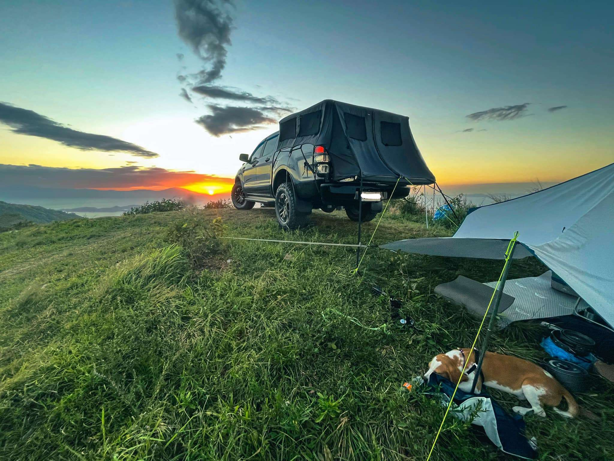

Top Attractions

Diving Spots
Explore vibrant coral reefs and diverse marine life in Anilao, known as the birthplace of scuba diving in the Philippines.
Explore
Diving Highlights
- Over 40 dive sites
- Rich coral gardens
- Macro photography paradise
- Year-round diving
Anilao offers some of the best diving experiences in the Philippines with crystal clear waters and abundant marine biodiversity.
Marine Life
Photography

Mt. Gulugod Baboy
Hike to the summit for panoramic views of Batangas Bay, Balayan Bay, and the surrounding islands.
Explore
Hiking Details
- 525 meters above sea level
- 2-3 hours hike duration
- Beginner-friendly trail
- 360° panoramic views
Perfect for beginners and photography enthusiasts. Best visited during dry season from November to May.
Hiking
Views

Camp Netanya
Relax on white sand beaches and swim in crystal-clear waters at Sombrero Island and other hidden gems.
Explore
Resorts Destinations
- Eagle Point Resort
- Anilao Awari Bay Resort
- Magdalena Beach
- SeaSpring Resort
From secluded coves to popular island beaches, Mabini offers diverse coastal experiences for every traveler.
Relaxation
Swimming